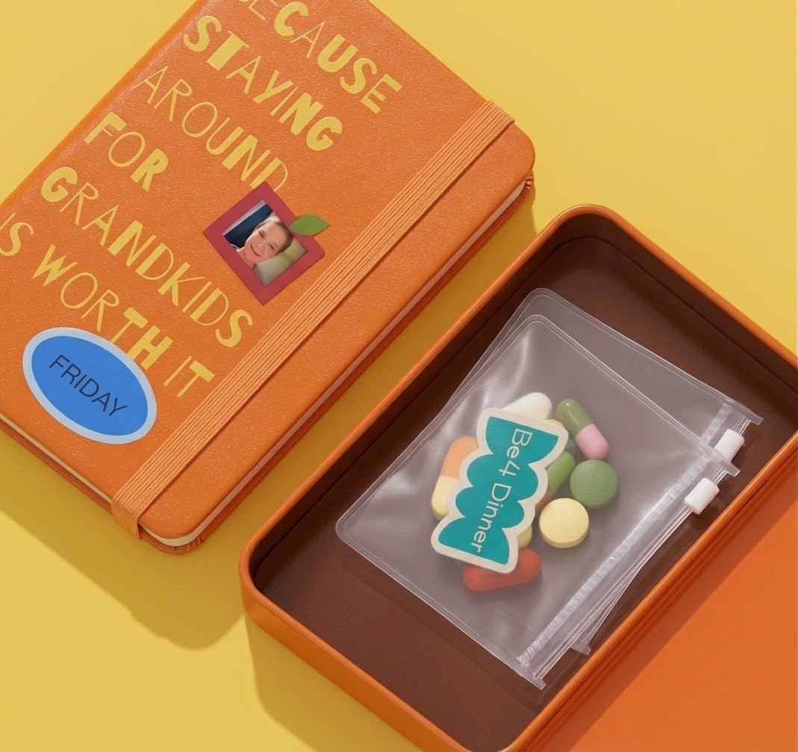
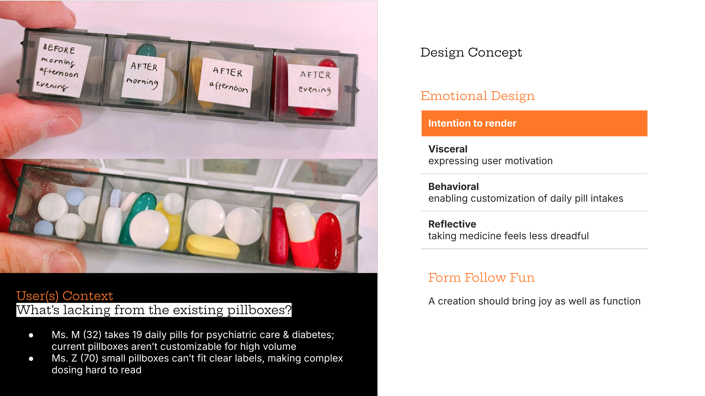
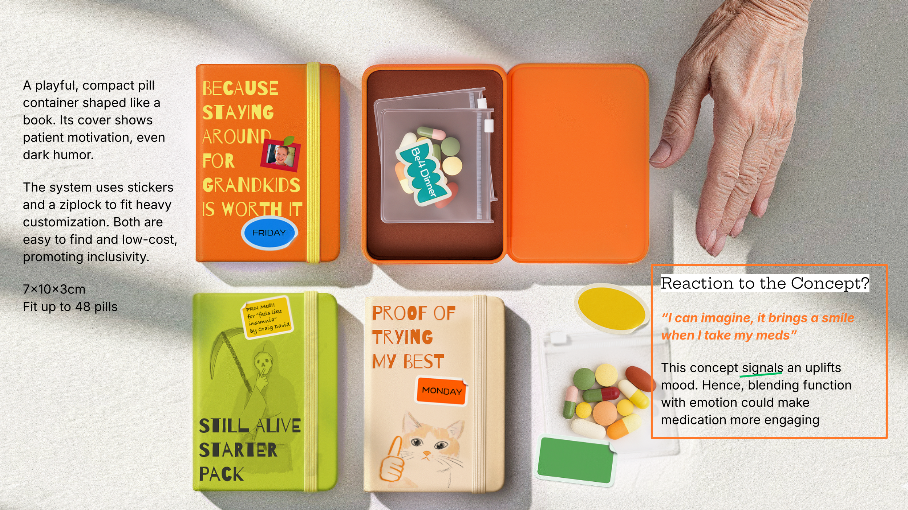
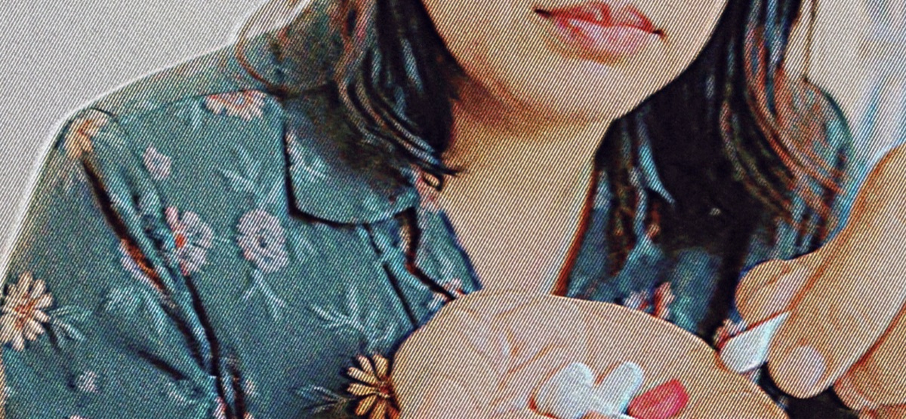
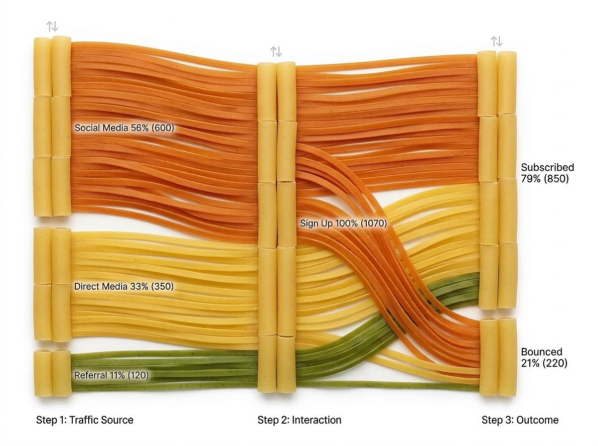
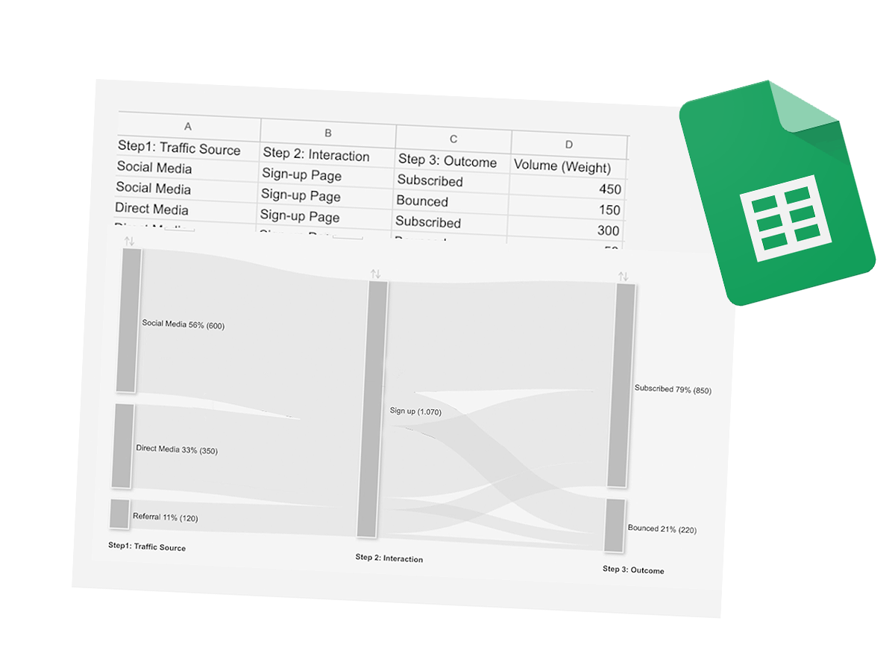
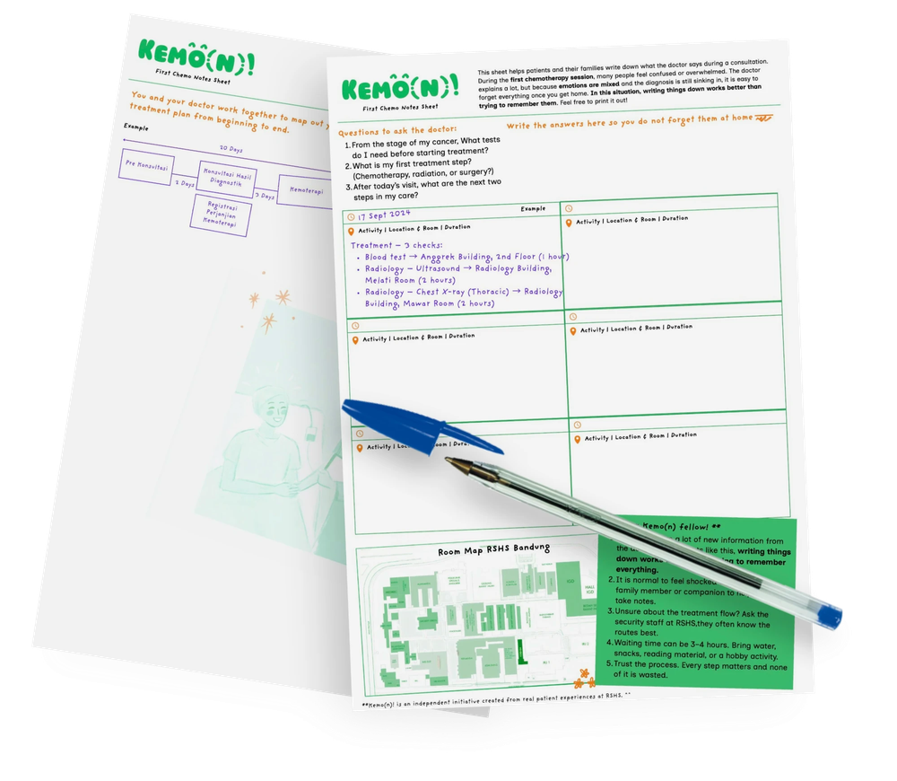
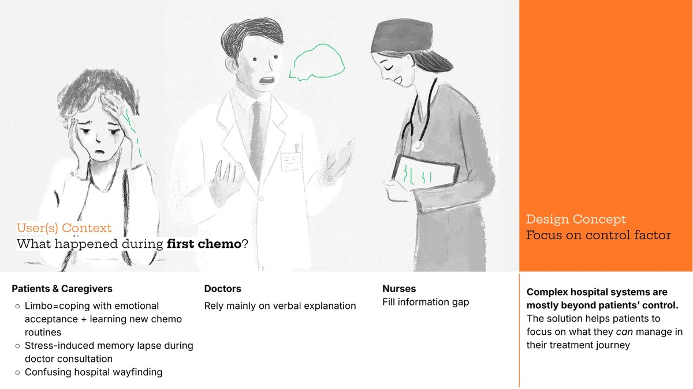
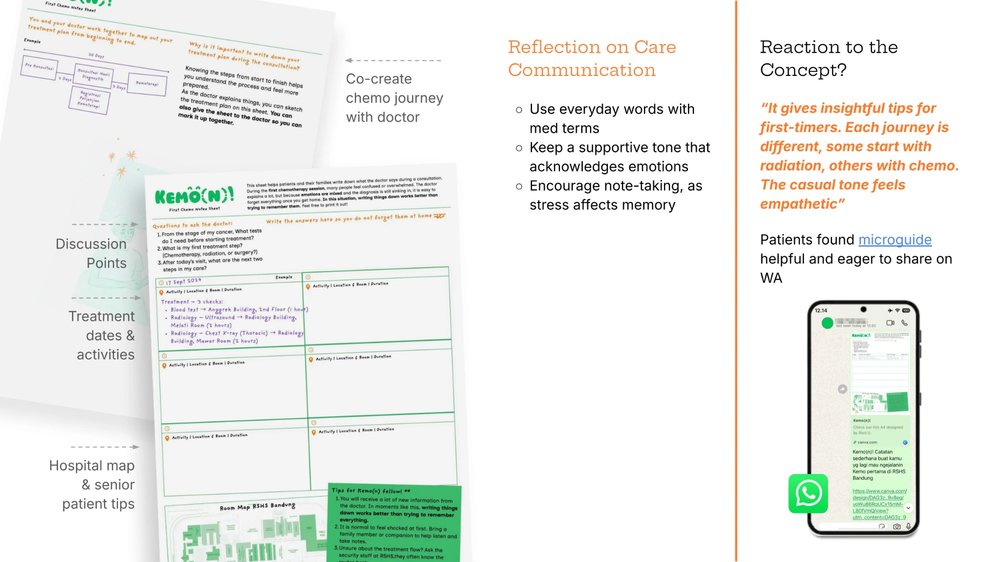
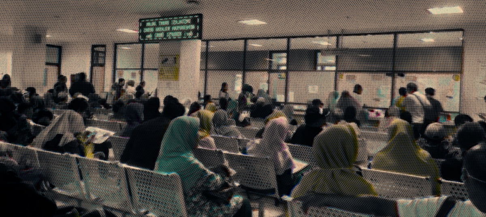

How might we make pill intake routines more fun for adults and older adults with polypharmacy?Service Design
This is designing inclusive healthcare. The project aims to make medication routines more engaging, by addressing the lack of a personalisation system ... Read moreThis is designing inclusive healthcare. The project aims to make medication routines more engaging, by addressing the lack of a personalisation system, especially for people with high amount daily medication (polypharmacy). Simple approaches of enabling daily schedule customization as well as easy material access would achieve design intent on reducing dreadfulness with ‘form follows fun’ philosophy.

Onceover, Chrome Extension for Job Autofills (Unreleased)AI & Vibe Coding
Applying for jobs is operationally heavy and emotionally draining. While not all job posting provide resume parse, and other ... Read moreApplying for jobs is operationally heavy and emotionally draining. While not all job posting provide resume parse, and other extension can handle the data fetch, their cold UIs make filling them out feel like a tax return. I realized nobody was addressing the feeling of the experience for job filling form. Onceover taken position from being functional yet delightfull autofills job forms.
Freestyle Coloring BookAnalogue Craft
6 titles coloring book + book binding myself. It built on one idea: outlines shouldn't dominate, so I sketched them loose, color ... Read more6 titles coloring book + book binding myself. It built on one idea: outlines shouldn't dominate, so I sketched them loose, color wherever feels right. Sold 50+ copies without expecting to. ^^
@contourgestalt
Concert Info for BTSAI & Vibe Coding
A concert info hub for Indonesian ARMY. 419 visitors in 30 days, 35 returning, 1m 45s average session. Zero ad spend. Apparently ... Read moreA concert info hub for Indonesian ARMY. 419 visitors in 30 days, 35 returning, 1m 45s average session. Zero ad spend. Apparently word travels fast in the fandom.
army-bookmark.github.io
Slice of fortune cookieAI & Vibe Coding
Design challenge here is to learn vibe coding with zero cost! (no subscription at all only effort!)
orange-table.github.io/slice-of-fortune


How to make an industrialized product feel less industrial?Analogue Craft
Before: all white, straight from the factory. After: wood texture added by hand. The real surprise was how many people asked where ... Read moreBefore: all white, straight from the factory. After: wood texture added by hand. The real surprise was how many people asked where to buy it.


Campaign Report as Sankey DiagramAI & Vibe Coding
I combined technical report with AI visual design to create playful, engaging campaign reports. Analyzed raw campaign data for a ... Read moreI combined technical report with AI visual design to create playful, engaging campaign reports. Analyzed raw campaign data for a local food distributor into clear Sankey diagrams. Using Google Sheets, Tableau, and Gemini AI.

Design Project CatalogueAnalogue Craft
In collaborative projects, I serve as the lead for layout design and creative direction for Design Exhibition, I partner with ... Read moreIn collaborative projects, I serve as the lead for layout design and creative direction for Design Exhibition, I partner with illustrators to conceptualize the visual narrative, and also ensuring the final binding and production.


Personalize clockAnalogue Craft
Upcycle material with collage technique. With personalised concept it gave freedom to the user to change the clock background as ... Read moreUpcycle material with collage technique. With personalised concept it gave freedom to the user to change the clock background as they want.

Wooden Box CreationAnalogue Craft
Small wooden boxes made without a single drop of glue. Pure wood joinery, exploring different joint types and compositions.




How might we make first-time chemotherapy journey more predictable?Service Design
This is designing care communication, First time doing chemo treatment, cancer patients and caregivers are usually in limbo - ... Read moreThis is designing care communication, First time doing chemo treatment, cancer patients and caregivers are usually in limbo - trying to cope with emotional acceptance while grasping the unfamiliar chemotherapy routines reality. To avoid stress-induced memory lapses during doctor’s consultation: a simple, shareable, and printable microguide form is introduced to facilitate note-taking that makes chemotherapy steps more predictable.